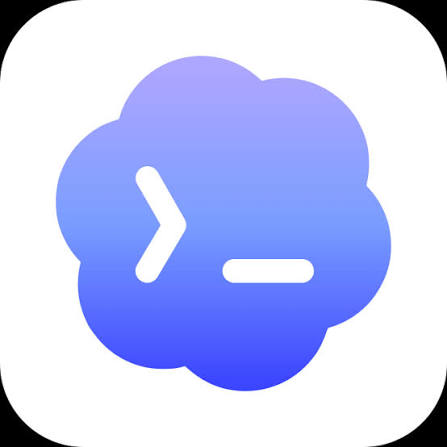
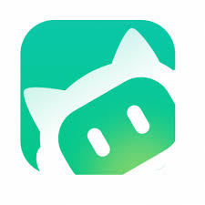

01
竞争格局
Competitive Landscape
五种能力路线六层能力框架
回答各家究竟在优化什么
下一阶段的竞争不在专家数量，
而在能不能交付一条可验收的设计旅程


把目标确认、视觉探索、代码实现、设计 QA 与分享压缩为一条短链。
以明确的视觉立场约束前端生成，重点避免模板化和默认 AI 审美。
既提供连续设计模式，也通过界面设计插件与相关 Skills 补充专项能力。
用职业角色建立任务预期，再通过团队分工承接复杂、多专业任务。
把探索、定义、设计、验证与交付拆成可复用、可串联的方法链。
frontend-design 是一个 Skill，其余四款是插件、套件或平台。本页比较的是能力构建方式，不是产品规模。| 产品 | 用户入口 | 能力载体 | 突出优势 | 主要代价 | 最佳场景 |
|---|---|---|---|---|---|
| Codex | 自然语言 / 插件 | 10 Skill | 实现与 QA 闭环 | 方法颗粒度少于千问 | 设计到代码交付 |
| 代码任务 | 单 Skill | 视觉风格集中 | 产品逻辑链较短 | 高表现力前端 | |
| Design / 插件市场 | 模式 + 扩展 | 工作台与专项能力并存 | 入口与能力选择成本 | 持续迭代设计 | |
| WorkBuddy | 专家 / 专家团 | 角色与团队 | 普通用户易委托 | 过程与验收不透明 | 复杂跨专业任务 |
| 千问办公 | 套件 / 快捷命令 | 28 Skill | 方法覆盖最完整 | 链路与维护复杂 | 专业流程标准化 |


| 产品 | 能力路由 | 上下文持久化 | 真实工具执行 | 验证门禁 | 主要技术风险 |
|---|---|---|---|---|---|
| Codex | 插件 Router | 用户上下文 + 项目 | 浏览器 / Figma / Repo | 截图 QA + 分享 | 工具不可用会使闭环降级 |
| Skill 描述匹配 | 会话 / 代码仓 | 工程 Agent | 通用测试 / 人工判断 | 缺少设计阶段状态与专属 QA | |
| 模式 + Agent 拆解 | 项目 + Global Memory | 插件 / Skills / 工具 | 预览与评论迭代 | 模式、插件与 Skill 边界分散 | |
| WorkBuddy | 专家 / 专家团 | 公开细节有限 | MCP + 自定义 Skill | 外显证据有限 | 多专家依赖与冲突可能成为黑盒 |
| 千问办公 | Skill Graph / 推荐链 | JSON + Marker | Connector 增强 | Check / Test / QA | 文本协议漂移，缺强运行时校验 |
| 要吸收的长板 | 来源 | 码道 Work 的落地方式 | 落在哪一层 |
|---|---|---|---|
| 统一委托入口 | Codex WorkBuddy | 用户只见一位「产品体验设计」专家，四类入口由 Router 自动选路，不暴露内部命令 | V1 · L1 网关 |
| 反模板审美立场 | visual-direction 不只产 Token，内置视觉立场与「回避无差别渐变／模板组件」的硬约束 | V1 · L3 方法 | |
| 连续迭代工作台 | 改第 N 版不重跑全链：设计契约做增量 diff，Router 支持「只改视觉／只改流程」的局部续跑 | V1 · L4 契约 | |
| 设计系统对齐 | 码道独有存量：直接对齐 CodeArts Design System 与现成组件库，而不是每次生成一套新 Token | V1 · L3 方法 | |
| 阶段方法与链式上下文 | 千问办公 | 借鉴五阶段组织与 reads / writes 声明；但用版本化契约替代点对点文件传递 | V1 · L4 契约 |
| 专家团分工 | WorkBuddy | 单专家负责主链；专家团承接跨专业并行，且每个成员的依赖与产出必须外显 | P2 · L2 身份 |
| 证据验收闭环 | Codex | 同视口截图对比 + 可运行原型，并把结果升级为控制完成声明的三态门禁 | V1 · L6 门禁 |